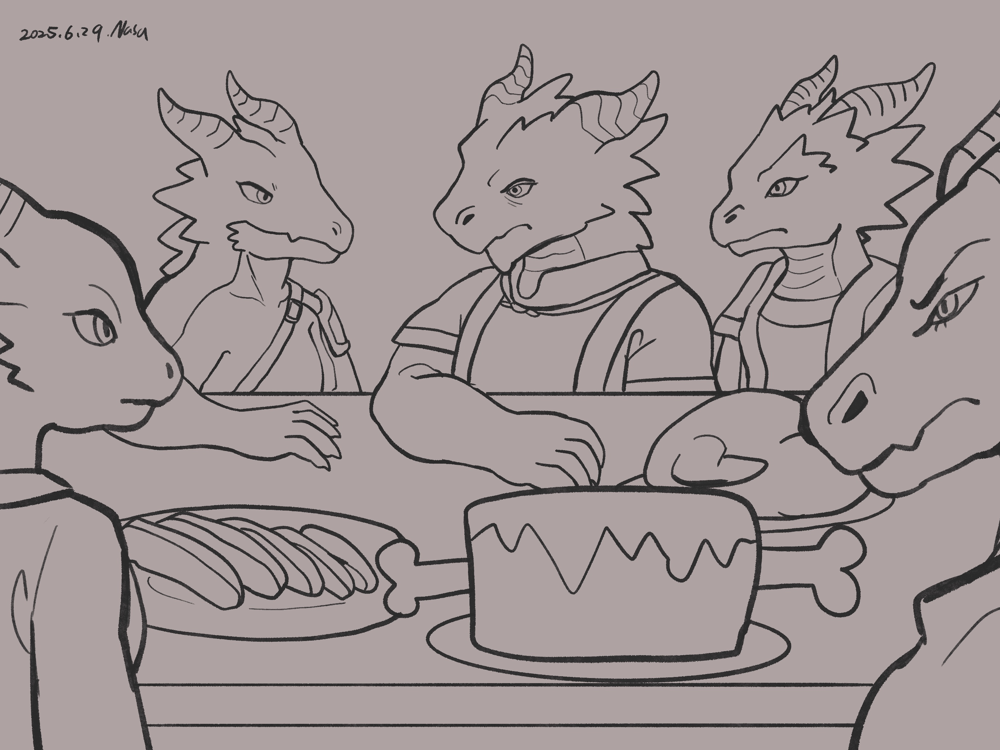
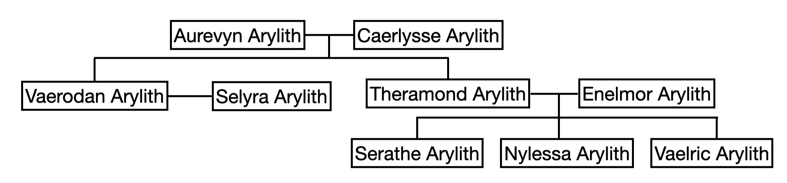

Chapter 1: Lunch with the Aryliths
Heir to Rathanad

Heir to Rathanad
15049.05.01
從土城，加入了 Maribel 的冒險者們花了一個月左右的時間，乘坐 Green 駕駛的馬車，終於抵達了拉撒拿。
拉撒拿是一座建立在山丘上的城鎮，走入入口後，便是一路向上的緩坡，而最接近天際之處，是一座宏大的宅邸。冒險者們一眼望去，除了他們之外，舉目皆是龍人。
想著從父母手上拿到的信件，阿龍意識到自己是以「貴族」、「王子」的身份，回到拉撒拿，讓他興奮不已。然而，身為龍人的他，卻不諳龍語，因此只能透過普通語，嘗試和「他的子民們」分享他的喜悅。阿龍的行為，卻只換得當地龍人的碎語（唯一聽得懂龍語的雷雅，可以聽得出來，阿龍得到的回應，盡是覺得他是白痴、瘋子）。不久後，他們也才發現，其實這裡的龍人們多數都是懂普通語的，也讓大家稍微鬆了一口氣。
隨著夜色漸黑，冒險者們決定還是得先找個下榻的地方。他們找了附近的一間酒館，拉了兩張桌子坐下，準備開始點餐。這裡的餐點似乎主要以肉類為主，佐以麵包，而不知道是酒館的關係還是拉撒拿當地的特性，酒類只有啤酒而已，但也是有不同款式的啤酒可以做選擇。
冒險者們發現了不遠處的一張桌子，有一名龍人引起了他們的注意。那是一名角不對稱的老年龍人，喝著酒，說話顛三倒四，而他身邊則是一隻看起來舉止優雅的中年銀色龍人。冒險者們想起阿龍信中那名斷了角的老僕人，莫非，這就是他？
在與這兩名龍人攀談後，冒險者們邀請他們加入他們的座位，並請他們喝了酒。老年龍人自我介紹名為 Nixul，或是大家喜歡稱呼他的方式，Old Nixul，而他旁邊的則是在拉撒拿唯一一家魔法商店當老闆的 Harrel Mizel。阿龍心急地掏出那塊他父母交給他的龍角，嘗試對著 Old Nixul 的角進行比對，而 Old Nixul 也認了出來，那便是他快二十年前折斷的那支角。
「少爺，你終於回來了！」
阿龍拚命詢問 Old Nixul 與 Harrel 關於自己的事。他得知，這裡的領導者，被稱為「龍冠」的存在，是 Arylith 家族，而他是 Arylith 現任龍冠唯一的子嗣，卻也的確是被他父母拋棄的孩子。他甚至有個自己的名字，Cyrinel Arylith。
阿龍焦急著自己該怎麼做。他對於自己的繼承權並沒有太大的渴望，但他的確想見見這兩名當初將他拋棄的父母。同時，他也更希望這個以魔法為傲的家族，有辦法幫他追蹤到他苦覓不得的 Penny 與 Big Os。比起自己，這件事似乎成為了他冒險主要的驅動力。
Old Nixul 鼓吹阿龍明天去見見他的家人，但 Maribel 希望阿龍不要馬上答應。他認為太輕易的相信這兩名剛認識的陌生人，不一定是件好事。Harrel 提議，冒險者們可以想想，如果要的話，明天早上到他在中城區的魔法商店找他，他在帶大家去接 Old Nixul，大夥兒在一起去見 Arylith 家。
阿龍也透過 Harrel，得知現在 Arylith 家除了他的父母外，他的叔叔一家也住在那，包含他的叔叔、嬸嬸、堂姐、堂妹，以及堂弟。而當然，他們一家也都會魔法。
不久後，Harrel 攙扶著酒醉的 Old Nixul 走出了酒館，冒險者們則紛紛和酒館老闆付了住宿的錢，上樓休息了。Maribel 堅持自己一間，寧可多花一些錢，來得到一些獨處的時間。
「我有兩對父母，但一對不是親生的，一對把我拋棄了，跟你沒有父母好像也差不多欸！」
阿龍試圖透過開玩笑來和 Maribel 拉近距離，但很顯然的，他沒有發現自己只是讓 Maribel 更傷心了。
15049.05.02
一早，Maribel 就來到一樓用早餐，也利用冒險者們還沒下來前，繼續寫他的筆記本。但冒險者們一旦出現，他便將筆記本收好，裝作沒事一樣。
冒險者們吃完早餐，便出發尋找 Harrel 的魔法商店。
商店內除了 Harrel 外，沒有其他人。Harrel 輕輕微笑，歡迎著冒險者們。雖然他曾說他的東西都不太貴重，只是花俏的小玩意，但冒險者們看到標價後，發現多數的東西都是他們合資也買不起的。最終，在他們詢問 Harrel 後，Harrel 搬出了一大桶的魔法小石頭，價格稍微可以接受些，但這些石頭的功效為和，冒險者們還是摸不著頭緒，甚至當雷雅嘗試偵測魔法時，還發現他的偵測被阻擋住了。Harrel 表示，這是他之前和其他商人買的，他也不知道這些石頭的功效。裡面各種大小、材質、顏色、形狀，也許每一顆的功效都不同。最終，Harrel 決定讓冒險者們一人挑選一顆，作為他的小禮物。
阿龍挑了一顆綠色的石頭，不清楚他的功效，於是他決定將石頭含在嘴裡。將石頭取出後，他還是不知道到底發生什麼事，但很顯然他的夥伴們都發現了什麼。很快的，他們便告訴他他的聲音變得極度高亢，像是吸了氦氣一樣。阿龍知道他不能以這樣的狀態去拜訪 Arylith 家。
鑰挑了一顆顏色混濁，形狀像是海膽的石頭。他搖了搖石頭，突然聽見裡面傳來一個人聲，好像是打招呼，於是他也應了一聲招呼，卻發現自己的聲音也被存了進去。他仔細收好這顆石頭，心想著也許未來有用。
其他冒險者們各自取了不同的石頭，但都決定先收好，不使用他們，以免這些石頭一旦使用就不能再用第二次了。
在 Old Nixul 未妥善整理的房子前，Harrel 請冒險者們稍等，讓他進去找 Old Nixul。等他出來時，Old Nixul 已經將自己打理地十分體面，準備出發了。然而，阿龍的氦氣嗓音還沒消除，也不確定會持續多久，於是 Old Nixul 邀請他們先進去坐坐。
接近一小時的時間，阿龍終於在 Maribel 的提示下，得知自己的嗓音恢復了，大家也就出發了。
走上山坡，偌大的宅邸在眼前越來越大。而除了 Arylith 家之外，這裡也還有其他的貴族，但房子沒有這麼宏偉。上城區除了這些貴族的家之外，還有一處議會廳，是龍冠辦公的地方。
由於抵達時已屆中午，Old Nixul 建議直接拜訪 Arylith 的宅邸。他敲了敲門。不久後，一名藍色，中老年的女性龍人開了門。阿龍眼神對上，用普通語喊了一句「媽媽」。這名龍人瞪大眼睛，回了一句「Cyrinel？」他先禮貌地邀請冒險者們入門，讓他們在客廳休息，然後要冒險者們等一會兒，他得去找「阿龍的父親」出來。
毛毛維持他的老習慣，在這貴族的客廳看看有沒有什麼值錢的東西。但縱使所有擺設都是非常華貴得，唯一吸引他注意的，是 Arylith 的家譜。

Vaerodan 和 Selyra 沒有意外就是阿龍的父母吧？那空白的位置，似乎缺少個名字。好像是「Cyrinel」來著？
不久後，當阿龍的母親 Selyra 自己回來時，他邀請冒險者們一同與他們共進午餐。
餐廳擺了兩張長桌，一桌已經坐了快滿，桌上的飯菜也擺好了，另一桌則是空的。Selyra 邀請阿龍加入主桌，也請其他人們坐在一旁的客桌。等大家都入座後，主桌那幾名阿龍的平輩，很顯然是他的堂姐妹弟便到廚房幫忙將餐點端上客桌上。
阿龍的家人們紛紛自我介紹或互相介紹。他的父親，現任的龍冠名為 Vaerodan 是一名紅龍人，表情嚴肅但不嚴厲，歲月在他的臉上留下不少痕跡；Vaerodan 對面的是他的叔叔，紅龍人 Theramond，他們倆兄弟長得挺像的，但 Theramond 比較爽朗親切一點，阿龍仔細觀察他，感覺他不太像那種別有心機的人；Theramond 一旁的是阿龍的嬸嬸黃銅龍人 Enelmor，十分低調，有著貴族的典雅；坐在 Enelmor 旁邊的是一名與他身形相當的年輕紅龍人，他的堂姐 Serathe，眼神充滿殺氣，毫無友善可言；與 Serathe 對比，一旁的堂妹紅龍人 Nylessa 則友善親人，甚至主動伸出手與阿龍握手，表示自己十分熱愛藝術；最後則是阿龍的堂弟，黃銅龍人 Vaelric，依照 Nylessa 的說法，是在場所有家人當中最最聰明的人。而用餐的過程中，冒險者們也發現阿龍的堂妹 Nylessa 似乎與 Harrel 有些私交，Nylessa 時常跑來客桌與 Harrel 攀談。
待用完餐後，Vaerodan 提及阿龍身份一事。他先向阿龍道歉，說明當初拋棄還是蛋的他，是他們的過錯，但事情都是有理由的。他也說道，這個家族以使用魔法為傲（阿龍詢問家人們是不是都會魔法，Vaelric 瞬間做出了一個阿龍的小幻象作為回應）。不過，這並不會改變阿龍是他與 Selyra 的親生骨肉，他還是有辦法讓阿龍取得他應有的權利。對此，Serathe 的表錢顯然有些許不滿，但也沒有無禮地在長輩面前表示些什麼。
Vaerodan 提議，讓阿龍通過一項試煉，來取回他繼承人的身份。
城鎮外的洞穴有一頭龍。去找那頭龍，取得與他接觸過的證明。
那樣，就不會有人對他的繼承權有任何意見了。